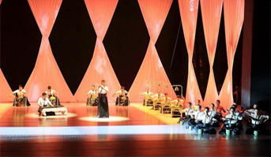
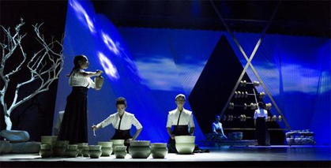
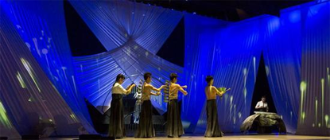
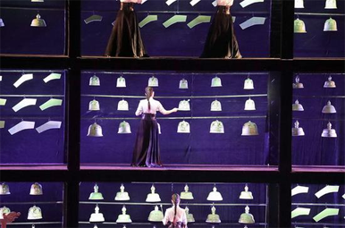

The Americans' smashing iron band (stomp) once shocked the world, and music can be played like this. The Koreans' "Knocking the Kitchen God" also traveled around the world to see the audience everywhere. On the stage, they all tried to use pots and pans as musical instruments, which became a pioneering work. But in fact, for the Chinese people thousands of years ago, this is not a rare thing. In the Book of Songs, there was a "smashing and singing", and "Fou (缶)" is also a wine bowl. In the Tang and Song Dynasties, the Chinese had already used the beautifully carved celadon bowl as a musical instrument. The sound was crisp and sweet, and the charm was elegant and refined. This kind of performance called "Yu Le" was active in folk halls, pubs, pear gardens, music houses and royal aristocratic halls, and was deeply favored by scholars. The ancients called the celadon tea bowl as "Ou (瓯)", and “Ou Yue (瓯乐)” as the name suggests is the bowling performance, but also the continuation of the ancient smashing music and the joy of the water. China has always had the tradition of playing music with ceramic instruments and utensils. Celadon was popular in the Tang and Song Dynasties more than a thousand years ago, and the center of celadon is being crossed. "Celadon Music" is an artistic expression of the instrument of "Vietnamese". In 2016, the secret enamel kiln site of the Shang Dynasty, the Tang Dynasty, and the Tang Dynasty in Cixi, Zhejiang Province was selected as one of the top ten new archaeological discoveries of the country. “Yue Kiln Celadon” once again entered the public eye. In fact, as early as the last 30 years of the last century, various celadon musical instruments including cuckoo clocks, button bells, bells, bells, etc. were unearthed in Zhejiang. In 1998, as the center of China and even the world's porcelain production in the Tang and Song Dynasties, more than 30 Tang and Song celadon musical instruments were unearthed at the Longkou Yue Kiln Site of Shanglinhu Temple in Cixi. Already almost lost the "Celadon Music" for nearly a thousand years, which has once again received the attention of the world. On January 15th, 2018, a performance called "Listening to Porcelain" was staged at the newly-opened Cixi Grand Theater in Zhejiang. This is the first opening performance of the theater, and it is also the first time that celadon music with a thousand years of history has been presented on the stage in a crossover sound. After nearly 20 years of "cultural relay" from the people to the government, the "Celadon Music", which flourished in the Tang and Song Dynasties and declined in the Ming and Qing Dynasties, was born again.  From the people to the government, the reincarnation of celadon music Fang Shi, a poet of the Tang Dynasty, wrote in his poem: "The instrument is twisted and twisted, and the wrist is smooth and self-clear." According to historical records, in the Tang and Song Dynasties where music was very developed, it was represented by "secure porcelain". Shanglin Yue Kiln Celadon was once the representative of the ceramic industry at that time, and Shanglin Lake has also become the world ceramics manufacturing center. At that time, the joy of killing was the literary talent of the literati after the meal, and the Yue Kiln celadon became a musical instrument. Under the impetus of “Lefu”, Celadon Music has been popular in the Tea House Tavern and the Royal Family, and there have been a large number of performances. However, in the late Song Dynasty, with the development of porcelain making technology in other places, the Yue Kiln gradually declined, and the celadon music also declined. It is said that although there are fewer and fewer professional musicians, there are still many folk artists who will knock on music. Until the liberation, the Zhedong area was able to see the performances at the local temple fairs from time to time. But after a long period of time, in the Cixi area of Ningbo, the history of the Yue Kiln celadon was forgotten, and the celadon music was once buried in history. Many locals do not even know that this land under their feet was once the center of the world's porcelain industry. Until the 1990s, with the excavation of celadon musical instruments, some folks, including the inheritor Zhang Junli, began to learn and resume traditional music and explore the traditional techniques of playing music. It was also at that time that celadon music attracted the attention of some cultural people. The musician He Zhanhao is a native of Zhuji, Zhejiang. In 2001, he visited the Shanglin Yue Kiln Celadon Site and was shocked by the celadon culture. For more than ten years, he has been committed to making suggestions for the "rebirth" of Yule. In 2002, Cixi City established the Tang and Song Dynasties Celadon Musical Instrument Development Research Group. Under the cooperation of the Yue Kiln Celadon Institute, a number of Yue Kiln Celadon musical instruments were re-developed. In 2009, Cixi Celadon Music Art Troupe was officially established, dedicated to the inheritance protection and development of Yule. At that time, Celadon Music was also included in the intangible cultural heritage of Zhejiang Province. Splicing up the fragments of the Tang and Song cultures, Celadon's music was reborn in the aftermath of the millennium.  The road to rebirth is long, try various forms to let modern people understand and accept Since its establishment in 2009, Celadon has created a number of works, performing in various non-legacy and government events. And many times out of the country, the overseas audience was greatly shocked. However, in China, celadon music is still unknown, even in Zhejiang Province, there are not many people known. In the view of Xie Jiefeng, head of the Celadon Music Art Troupe, the transmission and transmission of “Celadon Music” does have its limitations and difficulties. Whether it is theoretical research, musical instrument development or performance skills, there is still a long way to go. The development and manufacture of musical instruments is the primary difficulty. According to historical records, the ancient music was mostly struck with a celadon bowl, and the pitch of each bowl was solved by how much water was used. However, modern celadon music, how to adjust the pitch sound quality, is still a subject. At present, the Orchestra has set the tone by making celadon bowls of different sizes and thicknesses. In order to develop more types of celadon musical instruments, the local government also established the Yue Kiln Celadon Music Research Institute in 2013. However, Jiefeng Xie said frankly that the overall tone of the music is still relatively monotonous, and the musical expression is relatively weak compared to other instruments. At the same time, the single performance technique is also a big problem. The average audience can accept it for a little while, and it takes a long time to sit still. Previously, the performances of the music were mainly government-level activities, and entering the campus, etc., it is still difficult to have their own space in the performance market. In the past ten years, the orchestra and the government have repeatedly invited experts including music to create a pulse for the development and positioning of the music. In addition to the excavation and performance of traditional music, various forms of performances have been tried, such as intertwined with folk music performances, but the unique "porcelain music" characteristics of the music are often submerged in folk music.  The music and music painting "Listen to Porcelain" is also the product of brewing for many years. This performance is dedicated to truly returning to the "Vietnamese" as the main instrument itself, and at the same time, through the dance, multimedia and other means, let the audience feel a unique "porcelain music" art. The whole performance invited the masters from all over the country to have a vision and texture that is completely different from the previous pursuit of music or pure national music. From the first audition at the end of last year to the recent premiere at the Cixi Grand Theatre, this innovative “Ou Yue (瓯乐)” performance won the unanimous love of the local audience, and the show was hard to find every time. Xie Jiefeng said that the form of music and music painting is to hope that the general audience can accept the music and then understand it. After the premiere, the local government specially organized a seminar, including focusing on the composer He Zhanhao of the past 20 years. Music experts from all over the country have put forward their own ideas on the development of Yule. Whether it is to make Yule more pure and retro, or to make Yule more rich and more modern audience acceptance, is still under discussion. Xie Jiefeng revealed that in the future, they will try other forms, such as combining tourism, and playing with celadon music and music to let more people understand the history and value of the art. No matter what kind of road that Yule will take in the future, this millennium porcelain music, which makes people dream back to Datang, is on the road of reviving the glory. 